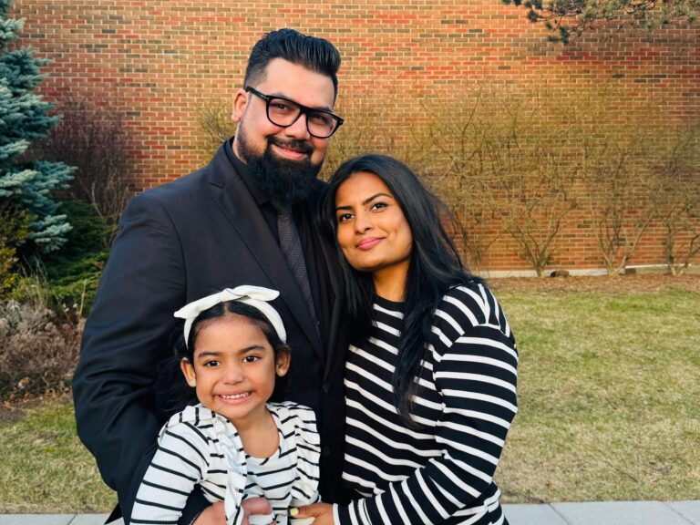

God
We believe in one God, eternally existing in three persons: Father, Son, and Holy Spirit. God is holy, loving, and faithful.
Our church
Living Hope Community Church Durham is a Christ-centered, multi-cultural community committed to following Jesus and participating in God’s renewing work in our world and neighborhoods.
Who we are
We gather to worship, pray, learn from Scripture, and walk together as disciples of Jesus—not just on Sundays, but throughout the week in our homes, workplaces, and neighborhoods.
We are a community that believes the gospel is for everyday life, and we want to live it out with faith, hospitality, and love.
What we believe
We believe in one God, eternally existing in three persons: Father, Son, and Holy Spirit. God is holy, loving, and faithful.
We believe Jesus is the Son of God, fully God and fully man, who died for our sins and rose again so that we might have new life.
We believe the Spirit is present and active, drawing people to Christ and transforming hearts to live out the faith.
We believe Scripture is the inspired Word of God and our final authority for faith and life.
We believe salvation is a gift of grace through faith in Jesus Christ. Through Him, we are forgiven, restored, and made new.
We believe the Church is the body of Christ, called to worship God, grow in faith, and serve others with love and truth.
Our life together
While we come from different backgrounds, we are one family in Christ, learning together what it means to love God, love people, and live faithfully in a changing world.
Our vision
Our vision is to be a church where people experience belonging, spiritual growth, and faithful service in Christ.
How we live this out
Welcoming others with Christ-like compassion and hospitality.
Maturing in faith through Scripture, prayer, and community.
Forming disciples through biblical teaching and shared learning.
Joining God’s work in our neighborhoods and across cultures.
Leadership
Lead Pastor
Passionate about discipleship, cross-cultural ministry, Timothy Leadership Training, Church Planting Coach, and walking alongside people as they follow Jesus in everyday life.Deacon
Serves through hospitality and care, helping people feel seen, welcomed, and connected through Coffee Chats and community life.Youth Counselling Pastor
Passionate about walking alongside young people, nurturing their faith, and creating a safe space for them to grow in Christ.Deacon
Faithfully serves through care and hospitality, with a deep heart for people and community.Deacon
Leads the Connect Team and supports administration, helping ensure our ministries run smoothly and people feel supported.Worship & Youth Pastor
Loves leading God’s people in worship and helping the church encounter Christ through music, prayer, and Scripture. She is also passionate about mentoring young people.Drummer & Audio/Visual Technician
Supports the worship team through drums and helps manage sound and media so our services run smoothly.Drummer & Audio/Visual Technician
Serves through music and technology, helping create an environment where people can engage in worship without distraction.
Connect Team Leaders
Team leaders, helping welcome and guide new visitors so they feel at home and connected in our church family.Join us
Sunday worship begins at 1:30 PM at 209 Cochrane St., Whitby, ON.
Plan your visit